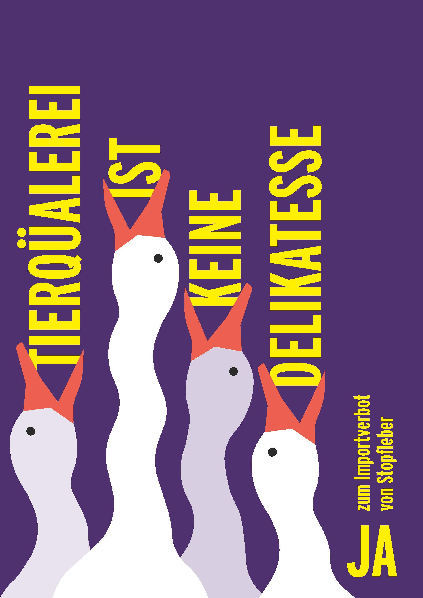
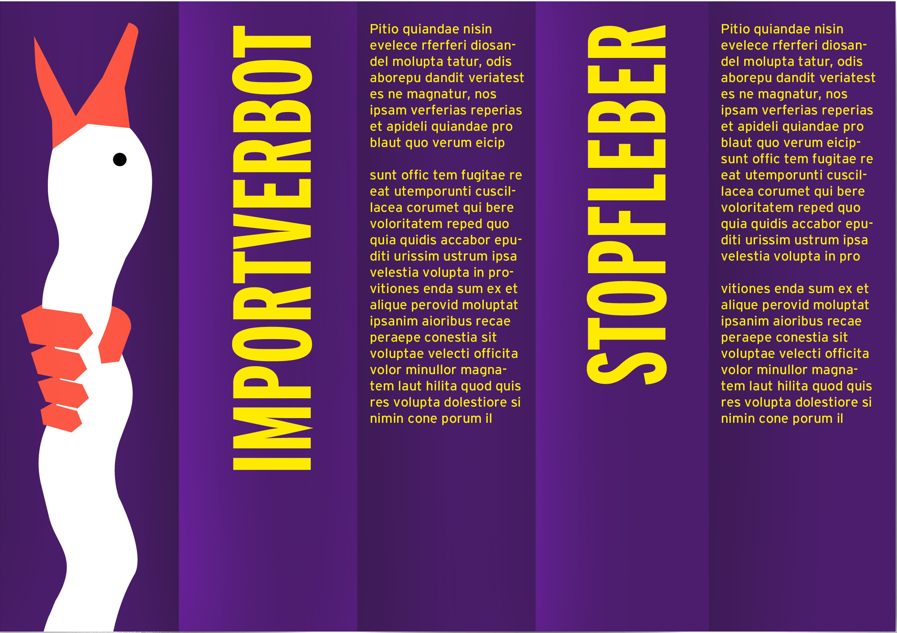
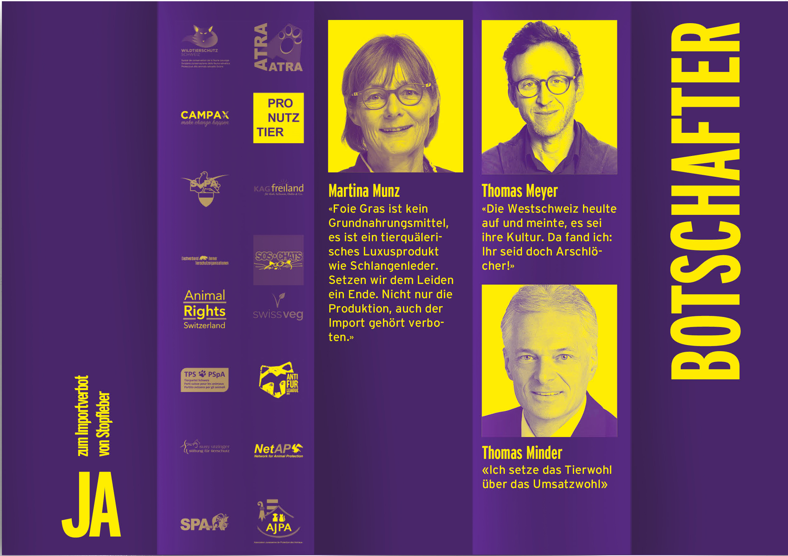

Im Rahmen einer Gruppenarbeit ist ein Gestaltungskonzept für eine Kampagne im Auftrag des Initiativkomitees „Stopfleber-Importverbot” entstanden. Das Konzept kombiniert Typografie und Illustration, um die Brutalität der Thematik aufzugreifen, ohne dabei abschreckend auf die Wähler:innen zu wirken. Über alle Medien hinweg wird die Vertikale betont, um eine weitere Anspielung auf den Stopfprozess zu erzeugen. In Verbindung mit dem kontrastreichen Farbkonzept und dem adaptiven 5-Spalten-Raster ergibt sich so eine Kampagne mit hohem Wiedererkennungswert im öffentlichen Raum